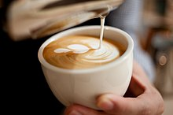

Types of Drinks
Espresso

Espresso is generally thicker than coffee brewed by other methods, with a viscosity of warm honey. This is due to the higher concentration of suspended and dissolved solids, and the crema on top (a foam with a creamy consistency). As a result of the pressurized brewing process, the flavors and chemicals in a typical cup of espresso are very concentrated. The three dispersed phases in espresso are what make this beverage unique. The first dispersed phase is an emulsion of oil droplets. The second phase is suspended solids, while the third is the layer of gas bubbles or foam. The dispersion of very small oil droplets is perceived in the mouth as creamy. This characteristic of espresso contributes to what is known as the body of the beverage. These oil droplets preserve some of the aromatic compounds that are lost to the air in other coffee forms. This preserves the strong coffee flavor present in the espresso.Espresso is also the base for various coffee drinks—including caffè latte, cappuccino, caffè macchiato, caffè mocha, flat white, and caffè Americano.
Espresso has more caffeine per unit volume than most coffee beverages, but because the usual serving size is much smaller, the total caffeine content is less than a mug of standard brewed coffee. The actual caffeine content of any coffee drink varies by size, bean origin, roast method and other factors, but a typical 28 grams (1 ounce) serving of espresso usually contains 65 milligrams of caffeine, whereas a typical serving of drip coffee usually contains 150 to 200 mg
Latte
Caffè latte (Italian: [kafˌfɛ lˈlatte, kaffe lˈlatte]), often shortened to just latte (/ˈlɑːteɪ, ˈlæteɪ/)[1][2] in English, is a coffee drink of Italian origin made with espresso and steamed milk. The term comes from the Italian caffellatte[3] or caffè latte, from caffè e latte, literally "coffee and milk"; in English orthography either or both words sometimes have an accent on the final e (a hyperforeignism or to indicate it is pronounced, not the more-common silent final e of English). In northern Europe and Scandinavia, the term café au lait has traditionally been used for the combination of espresso and milk. In France, café latte is from the original name of the drink (caffè latte); a combination of espresso and steamed milk equivalent to a "latte" is in French called grand crème and in German Milchkaffee or (in Austria) Wiener Melange.
Espresso has more caffeine per unit volume than most coffee beverages, but because the usual serving size is much smaller, the total caffeine content is less than a mug of standard brewed coffee. The actual caffeine content of any coffee drink varies by size, bean origin, roast method and other factors, but a typical 28 grams (1 ounce) serving of espresso usually contains 65 milligrams of caffeine, whereas a typical serving of drip coffee usually contains 150 to 200 mg